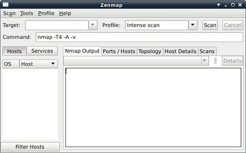
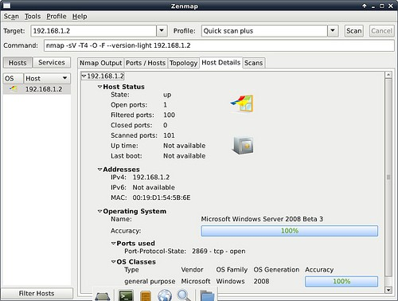
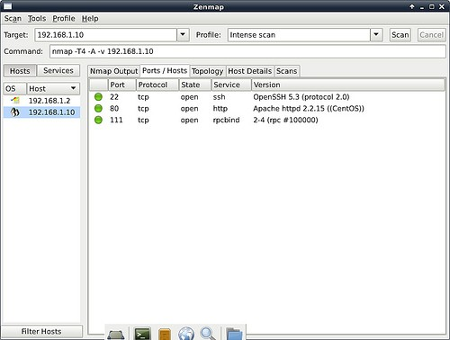
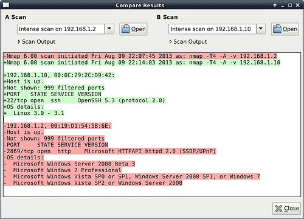
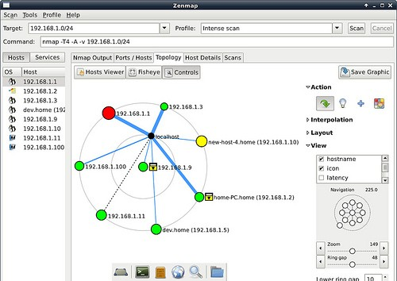
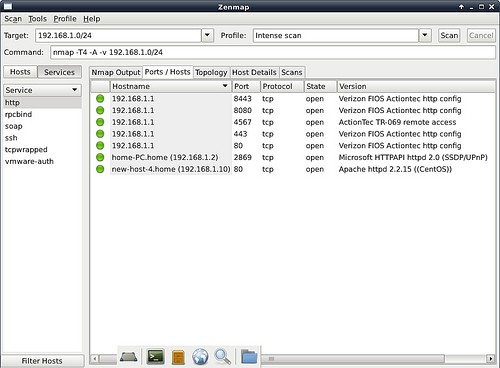
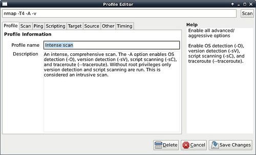
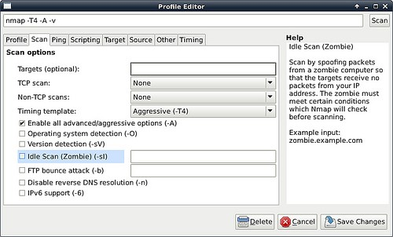

КАК ПРОСКАНИРОВАТЬ СЕТЬ В NMAP
Безопасность Июль 24, 2015 1 admin
Nmap — популярный сканер сетей, который может активно исследовать узлы или сети для получения о них подробной информации. С помощью Nmap можно обнаруживать активные узлы, сканировать сервисы и определять их версии, определить версию операционной системы, проверять порты и т д. Nmap это не только консольная утилита, у нее также есть графический интерфейс — Zenmap.
В этой инструкции я расскажу как просканировать сеть и отдельные узлы в Nmap GUI — Zenmap.
Для установки Nmap в Debian, Ubuntu или Mint:
sudo apt-get install nmap zenmap
В Fedora, CentOS или RHEL:
sudo yum install nmap nmap-frontend
Для запуска графического интерфейса наберите:
На этом скриншоте главное окно программы:

С помощью Zenmap можно просканировать определенный узел. Просто укажите ip узла в поле Target и выберите нужный профиль сканирования в выпадающем списке Profile. Затем нажмите кнопку Scan. Для сканирования нескольких узлов укажите их через запятую.
Для просмотра подробной информации об узле выделите узел в левой панели и перейдите на вкладку Host Details:

Для просмотра запущенных сервисов и открытых портов откройте вкладку «Ports / Hosts»:

СРАВНЕНИЕ ДВУХ РЕЗУЛЬТАТОВ СКАНИРОВАНИЯ
Когда сканирование узла завершено, можно запустить новое, для того же хоста либо для другого в этом же окне. Все результаты будут собираться Zenmap. Как только у вас будут результаты для больше чем одного узла вы сможете их сравнить. Для этого откройте меню «Tools»->»Compare Results» и выберите узлы для сравнения.

Zenmap также умеет сканировать локальные сети. Для этого достаточно указать маску сети (например 192.168.1.0/24) в поле Target.
Как только сканирование будет завершено вы сможете посмотреть топологию сети на вкладке Topology:

Для просмотра списка запущенных сервисов выберите «Services» в левой панели. Будут выведены все обнаруженные сервисы и узлы на которых они выполняются:

РЕДАКТИРОВАНИЕ ПРОФИЛЯ СКАНИРОВАНИЯ
Оной из полезнейших функций Zenmap есть возможность создания своего профиля сканирования. Вы можете создать или настроить профиль с различными параметрами и опциями. А потом сканировать узлы и сети с помощью этого профиля не указывая каждый раз параметры вручную.

